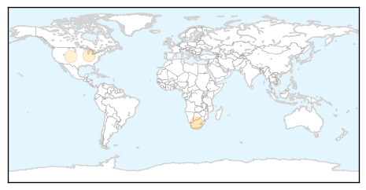
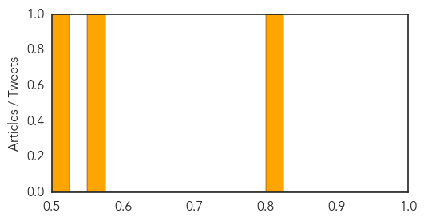
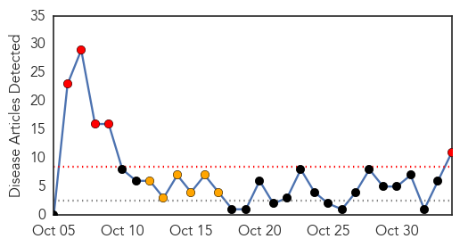
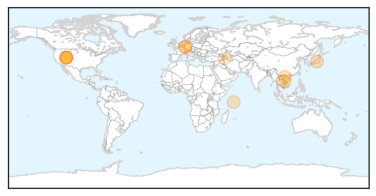
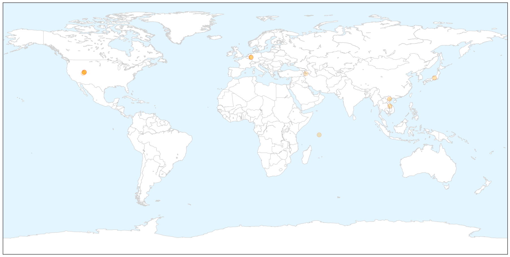
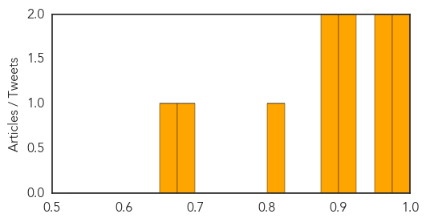

Measles
30-Day Web Trend
4 alerts, 3 warnings

30-Day Twitter Trend
0 alerts, 0 warnings

Article Locations
Article Confidences
Top Articles:
Top Tweets:
-
No tweets found for Nov 03, 2015
Hepatitis
30-Day Web Trend
5 alerts, 6 warnings

30-Day Twitter Trend
0 alerts, 0 warnings

Article Locations

X

Article Confidences
Top Articles:
- 0.984
- Thousands may have been exposed to hepatitis C, health officials say
- 0.982
- Thousands may have been exposed to hepatitis C, health officials say
- 0.960
- Researchers Discover That Hepatitis A Virus is of Animal Origin
- 0.953
- MEDIZIN ASPEKTE – The hepatitis A virus is of animal origin
- 0.919
- Ogden Hospital Alerts 4800 Patients of Possible Hepatitis Exposure
- 0.916
- Health-care workers at heightened risk of hepatitis C
- 0.896
- Vaccine still used after baby deaths
- 0.890
- Vaccine still used after baby deaths
- 0.804
- charity and telecom organisations join the health ministry to introduce Rotavirus vaccines in 2016
- 0.681
- Kajaran Medical Center: 16 Patients Contracted Hepatitis-C Due to Cost Cutting
- 0.672
- Thousands of Utahns could have been exposed to hepatitis C
Top Tweets:
-
No tweets found for Nov 03, 2015